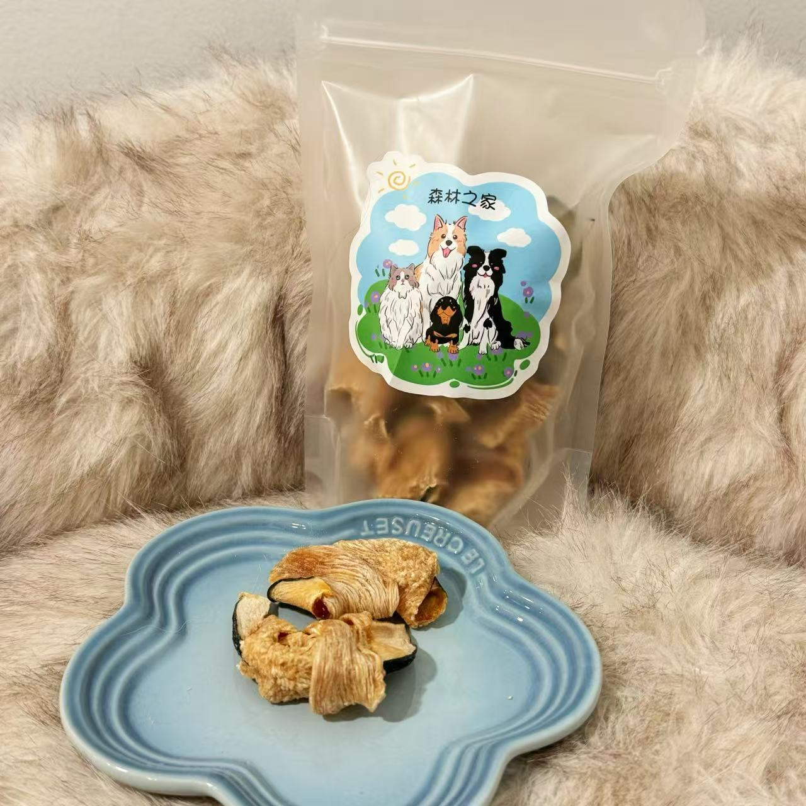

Why Make Homemade Treats?
- Control ingredient quality
- Avoid preservatives
- Customize nutritional needs
- Strengthen pet-owner bonds
Essential Healthy Ingredients
When preparing homemade dog treats, selecting the right ingredients is crucial for both nutrition and taste. Here are my top recommended ingredients:
- Lean Proteins: Chicken breast and salmon provide high-quality protein for muscle maintenance
- Whole Grains: Oatmeal and brown rice offer digestible fiber for healthy digestion
- Vegetables: Pumpkin (rich in fiber) and carrots (excellent for dental health)
- Fruits: Blueberries packed with antioxidants and apples (remove seeds)
Always avoid toxic ingredients like chocolate, grapes, onions, and xylitol. For special dietary needs, I often use coconut oil for skin health and turmeric as natural anti-inflammatory. Remember to introduce new ingredients gradually and consult your vet when creating recipes for puppies or dogs with allergies.